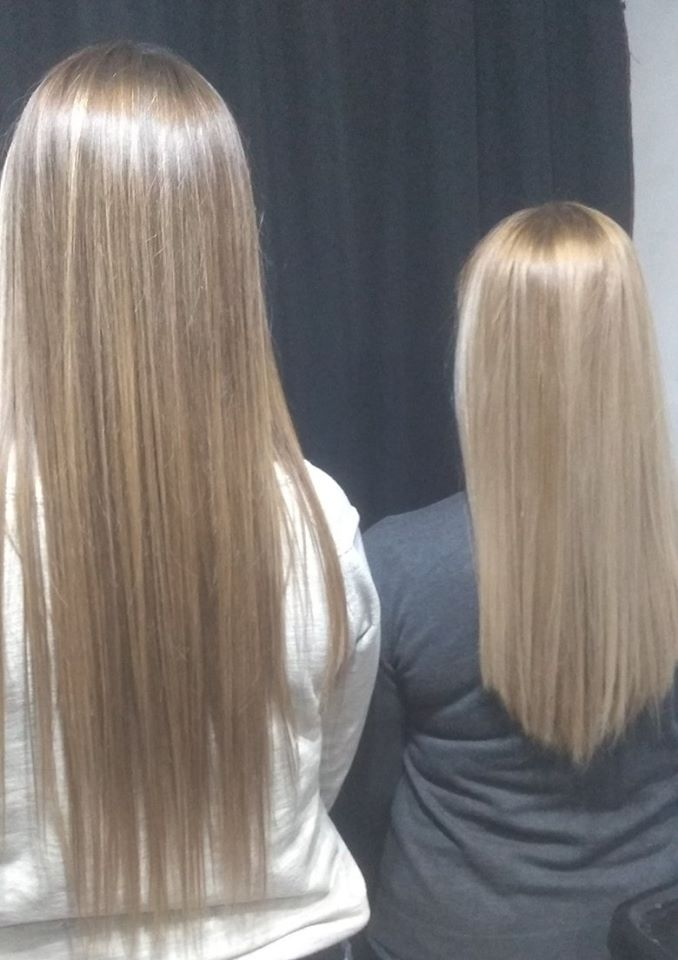
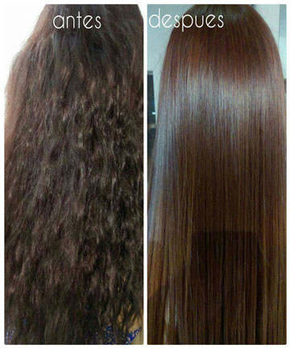
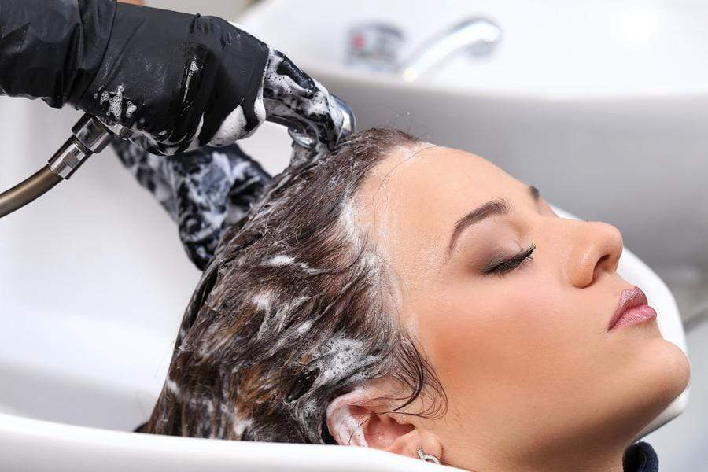

La hidratación del cabello es esencial para que luzca bonito, suave y brillante. ... La hidratación es una gran aliada para mantener el pelo sano, con brillo, sedoso y suave. Sirve para reponer la humedad natural, los nutrientes y la queratina perdida del pelo.

El botox capilar es un tratamiento a base de ingredientes naturales que refuerza la fibra capilar, aporta hidratación, nutre y da brillo. Aunque es conocido como botox, no contiene esta toxina; pero, se le llama así por su efecto rejuvenecedor del cabello.
 La Hidrocauterización es un tratamiento para el cabello que tiene el poder de penetrar y reparar la fibra capilar dañada y debilitada. Logrando así hidratar completamente el cabello y reconstruirlo de la raíz hasta las puntas.
Dependiendo del estado inicial del cabello, es posible que se requieran dos cauterizaciones al mes pero lo más probable es que con el tiempo vaya aumentando el intervalo de sesiones,para mantener el efecto, incluso hasta 4 meses, aunque por regla general, los efectos duran entre 1 y 2 meses en un cabello normal, las aplicaciones sucesivas ayudan a regenerar el pelo poco a poco, por lo que la constancia es básica en este tipo de tratamientos.